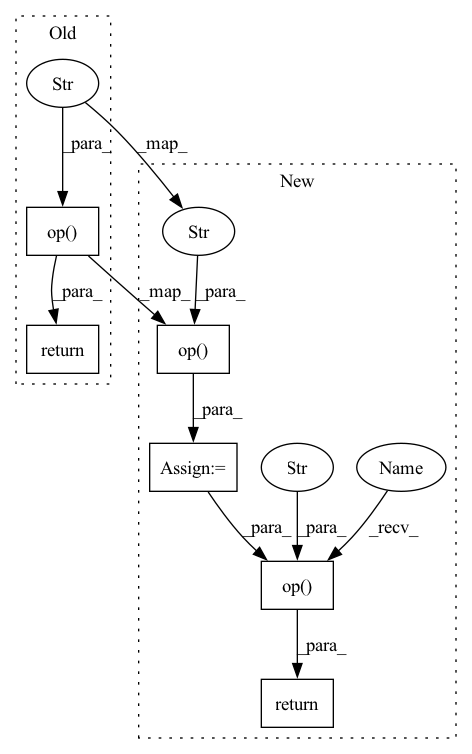

Pattern ID :16833

Before Change
zero_point = g.op("Cast", zero_point, to_i=torch.onnx.TensorProtoDataType.UINT8)
else:
zero_point = g.op("Cast", zero_point, to_i=torch.onnx.TensorProtoDataType.INT8)
return g.op(
"DequantizeLinear",
g.op("QuantizeLinear", inputs, scale, zero_point, axis_i=axis),
scale, zero_point, axis_i=axis)
@parse_args("v", "v", "v", "i", "i")
After Change
zero_point = g.op("Cast", zero_point, to_i=torch.onnx.TensorProtoDataType.UINT8)
else:
zero_point = g.op("Cast", zero_point, to_i=torch.onnx.TensorProtoDataType.INT8)
quantized = g.op("QuantizeLinear", inputs, scale, zero_point, axis_i=axis)
if (quant_min, quant_max) == (0, 127):
quantized = g.op("Clip", quantized, unused(g), g.op("Constant", value_t=torch.tensor(127, dtype=torch.uint8)))
return g.op("DequantizeLinear", quantized, scale, zero_point, axis_i=axis)
@parse_args("v", "v", "v", "i", "i")
def fake_quantize_per_tensor_affine(g, inputs, scale, zero_point, quant_min=-128, quant_max=127):
// NOTE: (0, 127) is allowed as special case. PyTorch restricts activations to be in the range (0, 127).
In pattern: SUPERPATTERN
Frequency: 4
Non-data size: 6
Instances
Fragment ID: 56318299
Project Name: pytorch/pytorch
Commit Name: 8d31706b9e855a455a49dd0d7b0b368fb8726470
Time: 2022-04-24
Author: bowbao@microsoft.com
File Name: torch/onnx/symbolic_opset13.py
M Class Name: AnonimousClass
N Class Name: AnonimousClass
M Method Name: fake_quantize_per_channel_affine(7)
N Method Name: fake_quantize_per_channel_affine(7)
M Parent Class:
N Parent Class:
M File Name: torch/onnx/symbolic_opset13.py
N File Name: torch/onnx/symbolic_opset13.py
M Start Line: 141
M End Line: 147
N Start Line: 137
N End Line: 149
'>
Before Change
zero_point = g.op("Cast", zero_point, to_i=torch.onnx.TensorProtoDataType.INT8)
if scale.type().scalarType() != "Float":
scale = g.op("Cast", scale, to_i=torch.onnx.TensorProtoDataType.FLOAT)
return g.op("DequantizeLinear", g.op("QuantizeLinear", inputs, scale, zero_point), scale, zero_point)
def _reduce_op_symbolic(onnx_op_name):
def symbolic(g, self, dim=None, keepdim=None):
After Change
zero_point = g.op("Cast", zero_point, to_i=torch.onnx.TensorProtoDataType.INT8)
if scale.type().scalarType() != "Float":
scale = g.op("Cast", scale, to_i=torch.onnx.TensorProtoDataType.FLOAT)
quantized = g.op("QuantizeLinear", inputs, scale, zero_point)
if (quant_min, quant_max) == (0, 127):
quantized = g.op("Clip", quantized, unused(g), g.op("Constant", value_t=torch.tensor(127, dtype=torch.uint8)))
return g.op("DequantizeLinear", quantized, scale, zero_point)
def _reduce_op_symbolic(onnx_op_name):
def symbolic(g, self, dim=None, keepdim=None):
self = _maybe_cast_reduce_op_input(g, self)
'>
Fragment ID: 56318298
Project Name: pytorch/pytorch
Commit Name: 8d31706b9e855a455a49dd0d7b0b368fb8726470
Time: 2022-04-24
Author: bowbao@microsoft.com
File Name: torch/onnx/symbolic_opset13.py
M Class Name: AnonimousClass
N Class Name: AnonimousClass
M Method Name: fake_quantize_per_tensor_affine(6)
N Method Name: fake_quantize_per_tensor_affine(6)
M Parent Class:
N Parent Class:
M File Name: torch/onnx/symbolic_opset13.py
N File Name: torch/onnx/symbolic_opset13.py
M Start Line: 156
M End Line: 161
N Start Line: 155
N End Line: 168
'>
Before Change
def _len(g, self):
return g.op("Size", self)
@parse_args("v", "t", "t")
def threshold(g, self, threshold, value):
After Change
def _len(g, self):
sz_0 = size(g, self, g.op("Constant", value_t=torch.LongTensor([0])))
return g.op("Squeeze", sz_0, axes_i=[0])
@parse_args("v", "t", "t")
def threshold(g, self, threshold, value):
'>
Fragment ID: 56318296
Project Name: pytorch/pytorch
Commit Name: 85c43c3da15ab9671791e6b7a7eabaccf2eeb459
Time: 2020-11-12
Author: jiafa@microsoft.com
File Name: torch/onnx/symbolic_opset9.py
M Class Name: AnonimousClass
N Class Name: AnonimousClass
M Method Name: _len(2)
N Method Name: _len(2)
M Parent Class:
N Parent Class:
M File Name: torch/onnx/symbolic_opset9.py
N File Name: torch/onnx/symbolic_opset9.py
M Start Line: 661
M End Line: 661
N Start Line: 661
N End Line: 662
'>
Before Change
def _len(g, self):
if _is_tensor_list(self) or self.node().kind() == "onnx::SplitToSequence":
return g.op("SequenceLength", self)
return g.op("Size", self)
def __getitem_(g, self, i):
if sym_help._is_tensor_list(self):
After Change
def _len(g, self):
if _is_tensor_list(self) or self.node().kind() == "onnx::SplitToSequence":
return g.op("SequenceLength", self)
sz_0 = size(g, self, g.op("Constant", value_t=torch.LongTensor([0])))
return g.op("Squeeze", sz_0, axes_i=[0])
def __getitem_(g, self, i):
if sym_help._is_tensor_list(self):
'>
Fragment ID: 56318293
Project Name: pytorch/pytorch
Commit Name: 85c43c3da15ab9671791e6b7a7eabaccf2eeb459
Time: 2020-11-12
Author: jiafa@microsoft.com
File Name: torch/onnx/symbolic_opset11.py
M Class Name: AnonimousClass
N Class Name: AnonimousClass
M Method Name: _len(2)
N Method Name: _len(2)
M Parent Class:
N Parent Class:
M File Name: torch/onnx/symbolic_opset11.py
N File Name: torch/onnx/symbolic_opset11.py
M Start Line: 376
M End Line: 376
N Start Line: 376
N End Line: 377